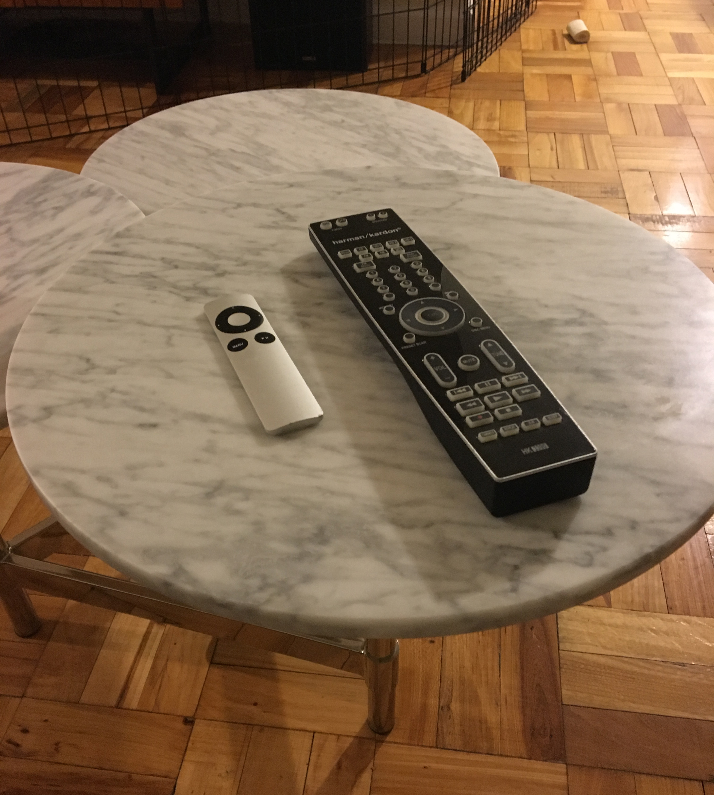
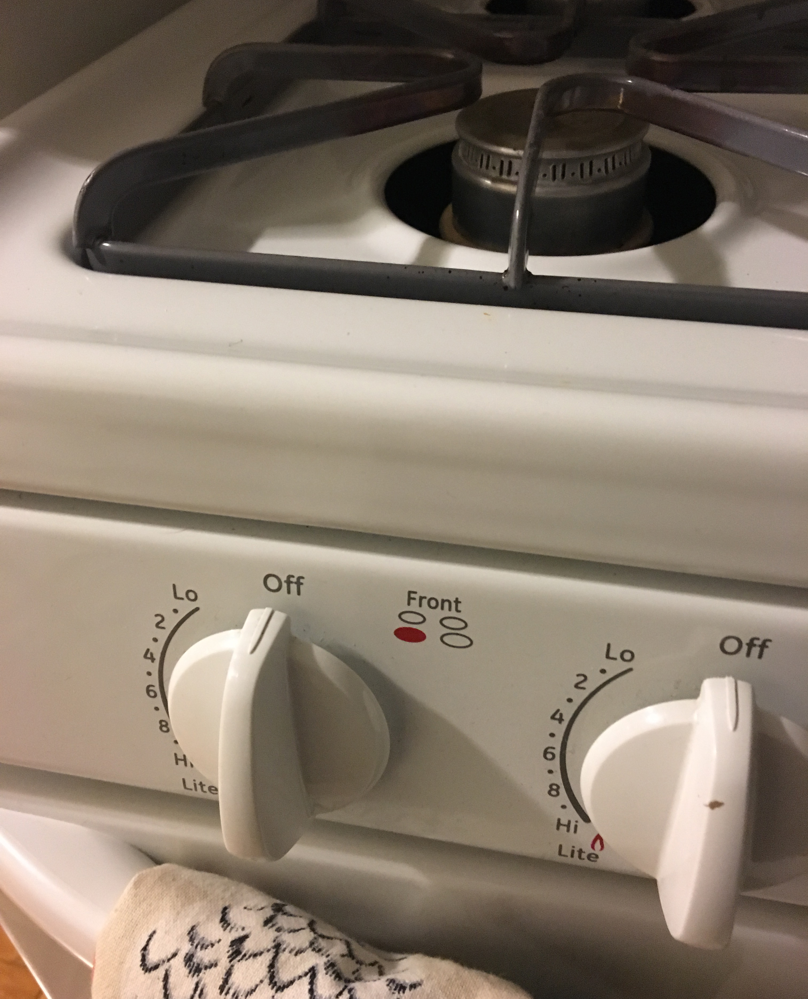

Interface Log
- Phone
- Check notifications
- Check weather
- Toothbrush
- On/off button to brush teeth
- Stove
- Turn knob to heat pan
- Dishwasher
- Select setting and cycle
- Elevator
- Press button to go down, then up at next destination
- Credit card reader
- Purchase breakfast and coffee
- Laptop
- Connect to internet
- Utilize pages and notes
- Sketch
- Chrome
- Atom
- Gym locker
- Select combination to lock by rolling to number on dial
- Phone
- QR code to enter gym and sign into classes
- Check social media such as Instagram, Facebook, and Snapchat
- Send emails
- Order food using Seamless
- Shower
- Select temperature and water pressure by adjusting the knob
- TV Remote
- Select volume and channel
- Phone
- Set alarm
Discription of Interface Moments
This is the interface I wake up to every morning, since I sleep with my phone under my pillow to hear my alarm. The on/off toggle is almost too easy to use, causing me to have to set backup alarms 15 minutes apart.
After waking up I check the weather while drinking some coffee. Apple's weather application lets me quickly view the hourly weather so that I can plan my outfit accodingly.
View of the two remotes used to control TV from my favorite spot on the couch. Even sitting down, the scrolling buttons on the Apple TV remote are clear and the up and down buttons on the black remote are visible. The black remote has lots of other function but the buttons are too small and close together to be useful.
The simple settings of the dial make the stove easy to use. The picture is zoomed in on the dial as I often bend over to make sure I can see which setting I have selected.